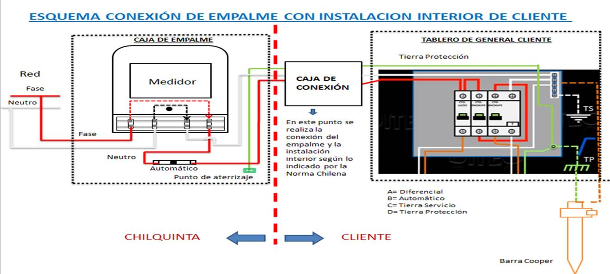

PROTOCOLO UNICO INSPECCION, MANTENIMIENTO,PERDIDAS,CONSTRUCCION Y PUESTA EN SERVICIO
EMPALMES 3F -2F -1F AÉREOS - SUBTERRÁNEOS
EMPALMES 3F -2F -1F AÉREOS - SUBTERRÁNEOS
| DATOS DEL EMPALME | |||
| Numero Medidor | |||
| Marca y Tipo | |||
| Lectura | Fase | ||
| Poste Conexión | Rótulo | ||
| Sellos | |||
| ICP (A) | S/E (kVA) | ||
| Fecha Ejecución | 19-08-2016 | ||
| Hora Inicio | Hora Término | ||
| Ejecutor | PRUEBA | ||
| TT/CC Instalados | |||
| Voltaje F1 - N (V) | Voltaje F1 - F2 (V) | ||
| Voltaje F2 - N (V) | Voltaje F2 - F3 (V) | ||
| Voltaje F3 - N (V) | Voltaje F1 - F3 (V) | ||
| Voltaje Neutro y tierra de protección (V) | |||
| TRABAJOS EJECUTADOS Y VALORIZADOS HH | |||
| TRABAJO | HH | ||
| RETIRO DE MEDIDORES | |||
| Medidor Retirado | Lectura | ||
| Marca | Tipo | ||
| PROTOCOLO DE INSPECCIÓN PRELIMINAR | ||||
| Item | Verificaciones | |||
| 1 | ¿Existen líneas de distribución (Baja Tensión) frente a la propiedad (Postes o cámaras)? | C | NC | NA |
| 2 | Verificar disponibilidad de tierra de protección para posterior conexión a caja de empalme. | C | NC | NA |
| 3 | ¿La red subterránea cuenta con conector de derivación? (Gelport o Limitador ) Sección del conductor existente; En caso de no tener Gelport verificar disponibilidad de soportes; Para el caso de los empalmes trifásicos verificar la viabilidad de la cámara existente. | C | NC | NA |
| 4 | Verificar que el trazado de la acometida del empalme aéreo no pase por propiedades aledañas. | C | NC | NA |
| 5 | Verificar que el trazado de la acometida no supere los 30 (m) de distancia entre el medidor y la red de distribución. Además, verificar que el trazado no atraviese propiedades vecinas. | C | NC | NA |
| 6 | Verificar que el trazado de la acometida cumpla con la altura mínima establecida 5, 5 (m) con respecto al eje de la calzada (Empalmes aéreos). | C | NC | NA |
| 7 | Verificar que el punto de llegada proyectado de la acometida a la propiedad no sea inferior a 3 (m) de altura. | C | NC | NA |
| 8 | Verificar que el poste de paso o apoyo cumple con las especificaciones y requisitos de montaje (Metálico: Ø 3“, Longitud: 6 (m) sin uniones y 3 (mm) de espesor, con argolla en su extremo superior, enterrado a un metro de profundidad con base de hormigón. | C | NC | NA |
| 9 | Verificar que el poste de paso o apoyo cumple con las especificaciones y requisitos de montaje (Madera Pino impregnado: Ø 6“ , Longitud: 6 (m) sin uniones, enterrado a un metro de profundidad. | C | NC | NA |
| 10 | En postes de apoyo (en donde se montará caja de empalme), verificar montaje de placa de madera (1” de espesor) y caja de conexión en la cual deberá estar conectada la tierra de protección. | C | NC | NA |
| 11 | Cuando se considere el montaje de caja empalme en fachadas de material ligero, verificar que esta cuente con placa de madera instalada (1” de espesor, 10” de ancho y 20” de longitud) y caja de conexión en la cual deberá estar conectada la tierra de protección. | C | NC | NA |
| 12 | Verificar que la ubicación proyectada para el montaje del medidor sea accesible y permita tomar lectura (En un radio no superior a 15 (m) desde el acceso principal de la propiedad). | C | NC | NA |
| C: Cumple NC: No Cumple NA: No Aplica | ||||
| MATERIALES SERVICIO DE EMPALME | |
| Descripción | Cantidad |
| Abrazadera plástica tipo hebilla | |
| Abrazadera plástica de 7,6x360 mm | |
| Base sujeción para abrazadera plástica | |
| Caja empalme monofásico | |
| Cond plano cu bl 2x4 mm2+1x2 5 mm2 p/tierra | |
| Cond plano cu bl 2x8 mm2+1x2 5 mm2 p/tierra | |
| Cond cu bl concéntrico 2x4 mm2 | |
| Cond cu bl concéntrico 2x6 mm2 | |
| Boquilla y contratuerca bak p/cable plano | |
| Boquilla y contratuerca bak p/concéntrico | |
| Cáncamo anclaje ac galv 7 94 x 110 mm | |
| Conjunto tensor p/conductor concéntrico | |
| Soporte acometida para empalme | |
| Perno ac gal 1/2" x 8" cab/tuer hexagonal | |
| Golilla reparto 40x40x5 mm p/perno 1/2" | |
| Tarugo Plástico # 6 | |
| Tarugo Plástico # 10 | |
| Interruptor Termomagnetico Monofásico ____amp | |
| Perno Maquina 3/16" X 1" | |
| Tornillo ac cadm 1" x 8 bwg cabeza plana | |
| Tornillo ac cadm 1" x 10 bwg cabeza plana | |
| Medidor Monofasico Tipo A nuevo Calibrado | |
| UDC Verde / Azul | |
| UDC Gris | |
| UDC Rojo / Blanco | |
| UDC Rojo | |
| UDC Café | |
| Portafusible | |
| Fusible 35A | |
| Fusible 63A | |
| Barra tierra | |
| Conector de bronce para barra toma tierra | |
| Caja Universal Trifasica | |
| Placa Conexión Trifasica 100A | |
| Interruptor Termomagnetico Trifásico ______ amp. | |
| Cond plano cu bl 2x4 mm2 | |
| Cond plano cu bl 2x8 mm2 | |
| PI 6 mm2 | |
| PI 10 mm2 | |

EN ANEXO, COMO EVIDENCIA, SE ADJUNTAN FOTOGRAFÍAS DEL CONEXIONADO FINAL DEL: MEDIDOR, CAJA DE CONEXIÓN Y TABLERO GENERAL (INSTALACIÓN INTERIOR)
| Utilizar este cuadro solo para las Construcciones o Puestas en Servicio | ||
| Si | No | |
| Instalación Cliente cuenta con la camara de registro y su tierra servicio | X | |
| Instalación Cliente cuenta con la camara de registro y su tierra protección | ||
| Tablero Cliente cuenta con diferencial | X | |
| Tablero cliente cuenta con protección automática | ||
| Nota: Si en esta lista de verificaciones se marca un "NO", la empresa distribuidora no conectará el empalme a sus redes, comunicará al cliente que no se podrá conectar hasta que se subsanen las o bservaciones e informará del hecho a SEC. |
||
| Utilizar este cuadro solo para las Mantenciones o Inspecciones de cualquier tipo | ||
| Si | No | |
| Instalación cliente cuenta con la camara de registro y su tierra servicio | ||
| Instalación cliente cuenta con la camara de registro y su tierra protección | ||
| Tablero cliente cuenta con diferencial | ||
| Tablero cliente cuenta con protección automática | ||
| Nota: Si en esta lista de verificaciones se marca un "NO", la empresa distribuidora no conectará el empalme a sus redes, comunicará al cliente que no se podrá conectar hasta que se subsanen las o bservaciones e informará del hecho a SEC. |
||
| Nombre Instalador Autorizado y/o Propietario | Registro SEC Instalador Autorizado | Rut | Firma |
| Nombre Técnico Chilquinta y/o Técnico Empresa Colaboradora | Registro SEC/Credencial CCTA | Rut | Firma |
| Nombre Supervisor Chilquinta y/o de Empresa Colaboradora | Registro SEC/Credencial CCTA | Rut | Firma |
ANEXO FOTOGRÁFICO (USO INTERNO)
| EN ESTA SECCIÓN SE DEBE DEJAR EVIDENCIA DEL CONEXIONADO FINAL DEL MEDIDOR | EN ESTA SECCIÓN SE DEBE DEJAR EVIDENCIA CAJA DE CONEXIÓN (INSTALACIÓN INTERIOR) | EN ESTA SECCIÓN SE DEBE DEJAR EVIDENCIA DEL TABLERO GENERAL (INSTALACIÓN INTERIOR) |